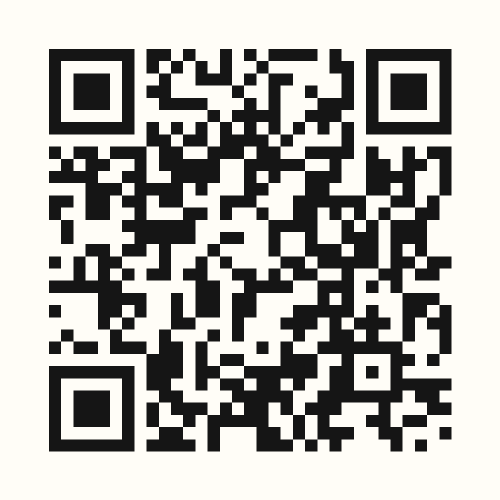
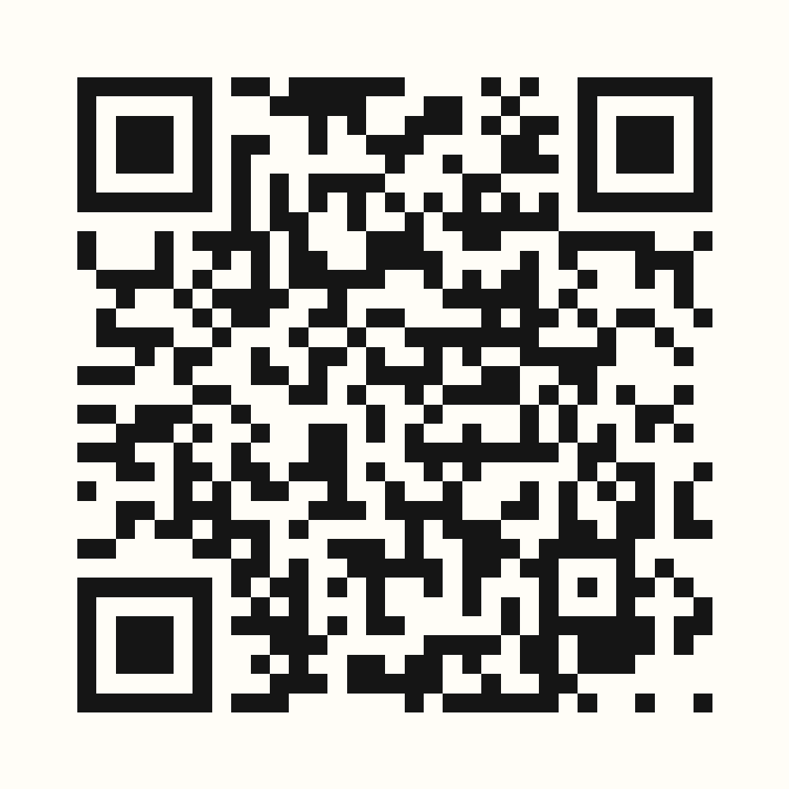

START
Scan to join
GitHub Copilot · Agentic workshop · 25 Nov 2026
Build
with an agent.
One room. Two labs. Your computer becomes the workspace. Start with the scan, then move through the numbered route below.
PORTAL
Share this page
Green light check
15-minute setup
Check each box as you finish. Your progress stays on this browser only.
0 of 4 ready
Click + next to Sessions
Choose Add GitHub repository, then browse or search for the lab and select Add.
Clone by repository URL
If the repository does not appear, choose Clone repository and paste its GitHub URL.
Create a new worktree
Use + → select repository → This computer → New worktree → Interactive.
Enter the lab prompt
Open the repository README and use the lab prompt or instructions supplied there. Send it to the interactive session.
!
Stop on access prompts.
Do not grant unrelated organizations access. Ask a helper if the repository, organization, or entitlement looks wrong.
Launch the code
Choose your lab
Primary repositories come first. Use an alternate only if a facilitator directs you there.
Lab 01
Tail Spin Toys
Open the README and follow the instructions in the lab repository.
Alternate Lab 1
Open fallback repo ↗

Lab 02
Build Your Automation
Open the README and follow the instructions in the lab repository.
Alternate Lab 2
Open fallback repo ↗

Organization accesshackathon-blue-tuna-19
Blocked? Find the shortest route.
Help matrix
Use the visible symptom; a helper can take it from there.
| Symptom | Likely cause | Next action |
|---|---|---|
| Join rejects account | EMU or wrong signed-in account | Use a personal GitHub.com account. Escalate to a helper. |
| Enterprise is not active | Entitlement not visible yet | Show Copilot settings to the help desk; do not continue guessing. |
| Repository not listed | Search or access issue | Use Clone repository with the exact lab URL, or ask for the approved alternate. |
| Organization access prompt | Unexpected or unrecognized grant | Pause. Confirm the organization URL with a helper before granting access. |
| Lab cannot find prompt | Wrong repository or missed instructions | Open that repository's README; do not invent an objective or prompt. |
| App or clone fails | Network, sign-in, or local setup | Keep the error visible and bring the machine to a helper. |
Need a person? Raise your hand and show this screen, the exact error, and which numbered step you reached.